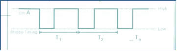

LDM
Manual de Operación del Manejo de Software y Sensores
Los sensores transforman estímulos de la naturaleza y datos de ambientes físicos en señales electrónicas las cuáles serán analizadas. Estos sensores posen partes tales como conectores cables y partes sensibles dispuestas para tener contacto con la magnitud física. Por tanto es muy importante la manipulación de estas partes sensibles teniendo cuidado de no tocarlas y mantenerlas libres de interferencias, contaminantes y agresiones físicas de impacto, para no afectar su rendimiento.
Conecte el sensor seleccionado al canal A con su cable correspondiente, si debe de usar 2 o más sensores conéctelos en los dos canales restantes. Cuando sean conectados los sensores (y previamente la interfase se encuentre encendida) la interfase los reconocerá en forma automática. En caso de que el sensor cuente con botón de ajuste de rango primero ajuste el rango con este botón antes del experimento.
Si va a realizar el experimento con la computadora, por favor termine el experimento y posteriormente desconecte con seguridad. Asegúrese que la computadora y los sensores sean conectados correctamente.
Los sensores pueden ser ajustados en rango y en punto cero. El rango puede ser ajustado por medio de los botones de la interfase o directamente por medio de Excel. El rango afecta la precisión del análisis así como su velocidad. El ajuste convencional al valor cero por medio del software también es posible, para la corrección relativa de datos. Usted Puede ajustar a valor Cero y el rango sólo cuando la interfase está conectada a la computadora. Una vez desconectada y apagada la interfase los valores predeterminados de valor cero y rango son restablecidos.
En caso de que los sensores necesiten un ajuste a valor a cero, es requerido cuando la tendencia de datos a colectar es muy breve, durante una nueva experimentación, o para prevenir la colaboración de otros factores químicos o físicos dentro de los resultados del experimento, y finalmente para obtener la colección de datos tan exactos como sea posible.
Presiones en el ambiente gráfico de Excel por medio de la computadora [Interfase], y en seguida presione [Ajuste de experimento], y enseguida [sensor], presionando [set zero] donde se mostrará el fichero correspondiente. Al momento de ser mostrado el fichero introduzca el valor cero y nuevamente presione [set zero].
En el caso de la sonda de conductividad, la parte sumergible del sensor deberá estar en agua destilada y entonces ajustar con el comando [set zero]. Para los sensores de voltaje, corriente. Conductividad, presión de aire, es posible ajustar a cero en Excel.
Para el Sensor de pH, se realiza el mismo procedimiento pero haciendo uso de los buffers para calibración.
Si usted utiliza los botones de la interfase, ajuste el rango de operación directamente en el equipo antes del experimento. Si la interfase es desconectada de la computadora los valores predeterminados se restablecerán. Presione [Interfase], enseguida [set experiment], y [sensor], y finalmente [rango], el cuál será mostrado en un fichero.
Seleccione la cantidad en el fichero de [rango] y en seguida presiones [set range].
Ajuste de experimento:
Voy al l ajuste de experimento de Interfase para determinar el intervalo del experimento, el tiempo, el valor cero, delos sensores y el rango de trabajo.
Usted pude ajustar el tiempo de experimentación, de esta forma determina el fin del experimento dentro del ambiente físico.
En el caso de la determinación de voltaje y la relación entre el voltaje en circuitos, indiferentes en la dimensión de tiempo, ajuste el intervalo de tiempo de 0.2 a 0.5 segundos.
En caso de medir cambios de voltaje en algún tiempo determinado como sucede en la carga y descarga de un condensador ajuste a un intervalo de tiempo más cortó.
Usted puede ajustar el valor a cero a través del procedimiento [Interfase(S)] -> [set experiment] -> [set zero] para determinaciones más exactas y datos relativos de voltaje.
Procesos de Experimentación.
Conecte el cable rojo a (+) y el negro a (-).
Coloque el sensor en el circuito de experimentación.
Determine el voltaje en resistencias y baterías.
Mida la relación entre voltaje y corriente usando el sensor de corriente en el circuito.
Determine el voltaje en LED, resistencias, diodos y acumuladores.
Notas y referencias:
Sea Cuidadoso con el ajuste del experimento en el intervalo permitido.
Sea cuidadoso por daños y agresión eléctrica.
Cuando encienda el equipo, sea consciente de las instrucciones del manual de seguridad.
Use baterías y equipamiento dentro del rango de voltaje permitido y nunca conecte corriente alterna al equipo directamente.
Ajuste para experimento.
En el caso de la medición de voltaje y la relación entre voltaje y corriente en circuitos simples, sin referenciar al tiempo ajuste el intervalo de tiempo de muestreo de 0.2 a 0.5 segundos.
En caso de determinaciones en algún intervalo de tiempo en especial, como en la carga y descarga de un acumulador ajuste el intervalo de muestre a un valor inferior a 0.2 segundos.
Formas de experimentación.
Conecte el cable rojo a (+) y el cable negro a (-).
Coloque el sensor en el circuido determinado como un amperímetro.
Realice las determinaciones en corriente y resistencias.
Experimento.
Medición de la relación entre el voltaje y la corriente en un circuito.
Relación entre el voltaje y la corriente de una solución electrolito.
Notas y referencias:
Sea cuidadoso con el ajuste del rango permitido del experimento.
Sea cuidadoso por posible exposición a electricidad.
Sea cuidadoso con cables descubiertos y resistencias.
El sensor podría ser dañado si se realizan experimentos en rangos superiores a los permitidos.
Cuando se enciende el equipo, sea cuidadoso e haber leído con anticipación el manual.
Nunca conecte directamente corriente alterna al equipo, use batería y equipos dentro del rango permitido de operación.
Ajuste de experimento:
En un experimento en el cuál se observan temperaturas de objetos por un tiempo normalizado, ajuste [Measurement interval] de 0.5 segundos a 0.2 segundos.
Ajuste [Measurement interval] anticipadamente al experimento por que la velocidad de reacción se obtiene diferencialmente de la situación y del material.
Procesos:
Observar si se generan cambios en la temperatura en experimentación por posición y en el medio ambiente.
Observar los cambios de temperatura dentro por inmersión en líquidos y fuera d ellos.
Determinación del calor específico, del punto de ebullición y de congelamiento de fluidos.
Cambios de temperatura en reacciones exotérmicas o endotérmicas entre reactantes químicos.
En experimentos relacionados con catálisis, se analiza la relación con respecto al tiempo.
Notas y referencias:
El sensor puede ser dañado si es usado sumergido en ácidos por tiempo prolongado.
Los sensores podrían ser dañados a altas temperaturas superiores a sus rangos comunes de operación como la temperatura del centro de una llama.
Las lecturas del sensor pueden ser afectadas por interacciones del medio ambiente como la profundidad del sensor en el líquido sumergido, partes del sensor que no están en contacto con el elemento de prueba.
Generalmente una inmersión de más de 2 cm. En el líquido de prueba es suficiente para realizar las mediciones con el sensor.
En el caso de líquidos en ebullición sea cuidadoso de no mojar elementos más allá del termocople, y también verifique el rango de trabajo del termocople respecto a la temperatura de ebullición del líquido.
Ajuste de experimento
Ajuste del rango de medición con el botón que se encuentra a un costado del sensor antes de realizar el experimento.
Ajuste el valor del cero para mediciones más exactas. Primero ajuste el valor de cero usando agua destilada en el [setzero point] de [set sensor] de [set experiment] de [Interfase] en la hoja de cálculo de Excel.
Ajuste el intervalo de medición [measurement interval] a más de 5 segundos considerando el tiempo de reacción de sensor para adquirir datos.
Si tú deseas observar la tendencia de los cambios por medio del uso de una gráfica ajusta el tiempo a 0.5 segundos.
El intervalo de medición [mesurement Interval] por lo general genera la mayor incertidumbre.
Mediciones Familiares con este sensor.
Determinación de la conductividad, en un líquido como lo es una solución de sal o de varias preparaciones.
Experimentos:
Determinación del valor de la conductividad por densidad de un electrolito líquido.
Determinación de la conductividad de líquidos relacionados con nuestro medio ambiente, como lo son los ácidos y la contaminación cuerpos de aguas contaminadas.
Nota y referencias
El sensor podría necesitar un tiempo mayor para generar una respuesta para rectificar el valor, si la temperatura es mayor a 25ºC o si es menor de 10ºC.
No sumerja el sensor en líquidos de alta viscosidad o pegajosos, sumerja cuando menos 2 cm. del elemento sensor.
Los sensores de oxígeno disuelto, pH, densidad salina, y sensor de iones, operan bajo el mismo principio de conductividad eléctrica de iones en un electrolito líquido. Por lo tanto no utilice varios sensores en el mismo líquido.
Cuando se ajusta el valor cero use agua destilada.
Después y antes del experimento o cuando el valor medido cambia limpie el electrodo entre cada determinación.
Después de limpiar el electrodo con agua destilada con un bote de lavado, elimine el agua en exceso.
Sea cuidadoso de no golpear o dañar el electrodo.
Ajuste de experimento
Cuando el sensor no se encuentre en uso limpie el electrodo con agua destilada y remueva el exceso con un trozo de papel filtro. Para guardar el electrodo colóquelo en su contenedor aprovisionado de cloruro de potasio 3.3 M. Para periodos costos de hasta horas coloque el electrodo en soluciones estándares de amortiguamiento de pH 4 o 7. Para periodos largos el electrodo debe de permanecer el contenedor de KCl.
Para calibración.
Antes de realizar un primer experimento debe de someter el electrodo al proceso de calibración.
Tome el sensor de su recipiente contenedor de KCl y lave este por medio de agua destilada, removiendo el exceso de esta con un papel absorbente. Coloque el sensor en una solución estándar y ejecute [set zero] de Excel, después de esto, lave el electrodo con agua destilada y seque con papel absorbente, coloque el electrodo en una solución amortiguadora de pH 4.0 y ejecute [set zero] de Excel. Si el experimento a realizar es característico de soluciones básicas, realice este paso con la solución amortiguada de 10.0. Al ajustar el punto de calibración el valor es guardado en la interfase, al ser esta desconectada, el valor inicial de fábrica es restaurado.
Ejecute experimentos
Preceda a la calibración del electrodo antes de iniciar el experimento, No deje el electrodo en la solución de experimentación por más de 5 minutos.
Experimentos no realizables: No introduzca el sensor en soluciones de concentración mayor de 1 .0 M esto podría dañar el electrodo. .
Experimentos:
Determinación del valor del pH para barias muestras como bebidas.
Determinación el pH de líquidos relacionados con nuestro medio ambiente, como lo son los ácidos y la contaminación cuerpos de aguas contaminadas, o bien de alimentos en solución.
Nota y referencias
El sensor podría necesitar un tiempo mayor para generar una respuesta para rectificar el valor, si la temperatura es mayor a 25ºC o si es menor de 10ºC.
No sumerja el sensor en líquidos de alta viscosidad o pegajosos, sumerja cuando menos 2 cm del elemento sensor.
Los sensores de oxígeno disuelto, pH, densidad salina, y sensor de iones, operan bajo el mismo principio de conductividad eléctrica de iones en un electrolito líquido. Por lo tanto no utilice varios sensores en el mismo líquido.
Cuando se ajusta el valor ceo use agua destilada.
Después y antes del experimento o cuando el valor medido cambia limpie el electrodo entre cada determinación.
Después de limpiar el electrodo con agua destilada con un bote de lavado, elimine el agua en exceso.
Sea cuidadoso de no golpear o dañar el electrodo.
Este tipo de sensor es un sensor tipo interruptor que tiene dos estados, condición baja o encendido, y condición alta o apagada. El sensor foto-puerta comprende un transmisor infrarrojo y un receptor montado y alienado en un componente plástico.
Un interruptor eléctrico es usado para bloquear la señal al la puerta.
Experimentos sugeridos con este sensor:
Determinación de la aceleración en caída libre.
Investigaciones de la aceleración de la gravedad.
Estudio del movimiento pendular.
Determinación del periodo de un péndulo.
Este tipo de sensor permite la interconexión en cascada, es decir que una vez conectado un sensor a la interfase se puede conectar un siguiente sensor a la primer sensor foto-puerta, sin ser conectado directamente a la interfase. De esta forma se pueden conectar hasta 5 sensores de un mismo puerto de la interfase.
Requerimientos eléctricos.
Pico de la longitud de onda infrarroja: 880 nm.
Tiempo de respuesta; 2.5 microsegundos.
Tiempo de caída: 3.8 microsegundos.
Temporizador digital. El temporizador digital es una opción con la que cuenta el equipo para hacer estimaciones temporales de forma estroboscopia. Esta opción puede estimar las señales a partir de los sensores de reconocimiento automático o desde el bloque de terminales El ejemplo de la señal de temporización se muestra a continuación.

Si cambia la opción "slit quantity" en la configuración del estrobo, puede usar el equipo para determinar la repetitividad de movimientos periódicos.
Excel no puede estimar variaciones en periodos de tiempo menores a 0.1 seg. Si necesita realizar estimaciones a una velocidad mayor, debe usar un programa especial.
Experimento |
Cantidad de periodos (slip quantity) |
Detalles del experimento |
| El periodo de un péndulo | 2 | Estimación del periodo de un péndulo corto |
| Grabación temporizada | 1-9 | Estimación de distancia, velocidad y aceleración. |
| El periodo de un rotor. | 1-9 | Estimación de la velocidad de un rotor. |